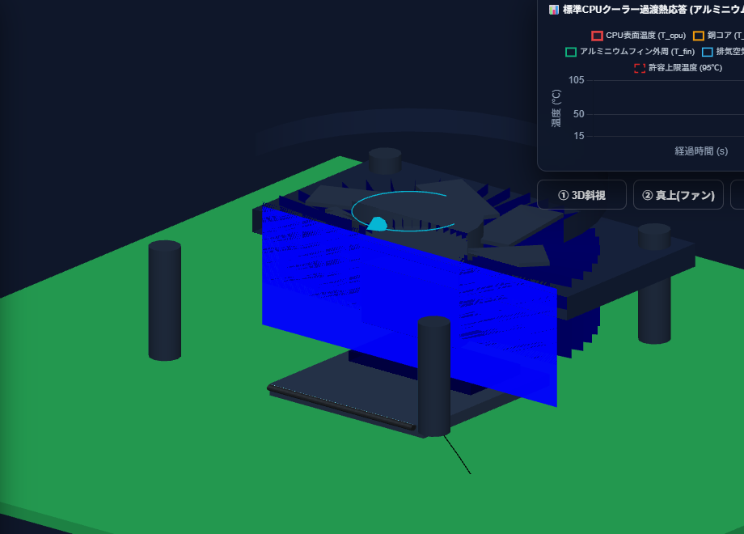
熱/流体パソコンの頭脳（CPU）が熱暴走しないよう冷やすファンクーラーの仕組みや、アルミ・銅などの金属による熱の伝わり方を色でリアルタイム観察できます。
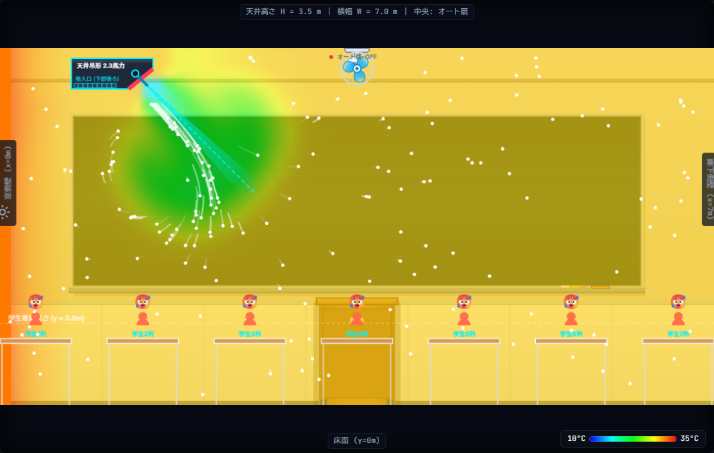
熱/流体教室の天井エアコンとサーキュレーターを動かしたとき、部屋全体の空気や温度がどう混ざり合って涼しくなるかをスーパーコンピュータと同じ流体解析で可視化します。
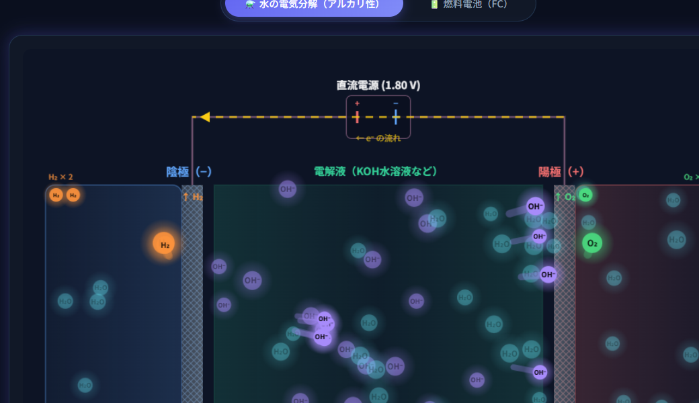
動力水を電気分解して水素を作り、その水素を使って逆に電気を生み出すクリーンな燃料電池の中で、電子やイオンがどう動くかを図解アニメで体験できます。
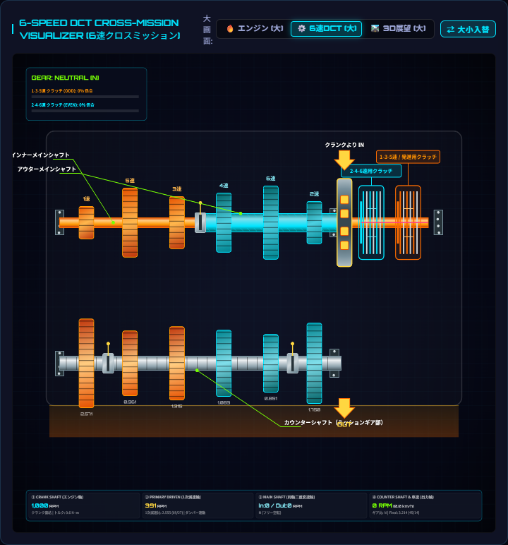
動力バイクやレーシングマシンの心臓部。ピストン運動による燃焼爆発と、6速DCT（デュアルクラッチ）トランスミッションによるスムーズな駆動力伝達機構を学べます。
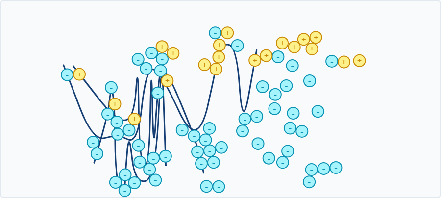
化学/バイオ濁った水に「凝集剤」と「ポリマー」を入れると、小さな汚れの粒同士が架橋して大きな塊（フロック）になり、急速に底へ沈んで透き通っていく現象を再現します。
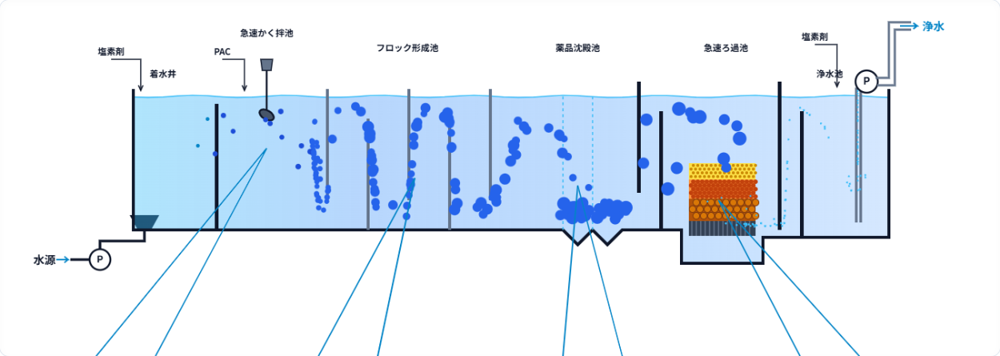
化学/バイオ川の濁り水から安全な水道水を作る浄水場プラント。急速攪拌池、フロック形成池、薬品沈殿池、急速ろ過池の連続プロセスと流動アニメーションを学べます。
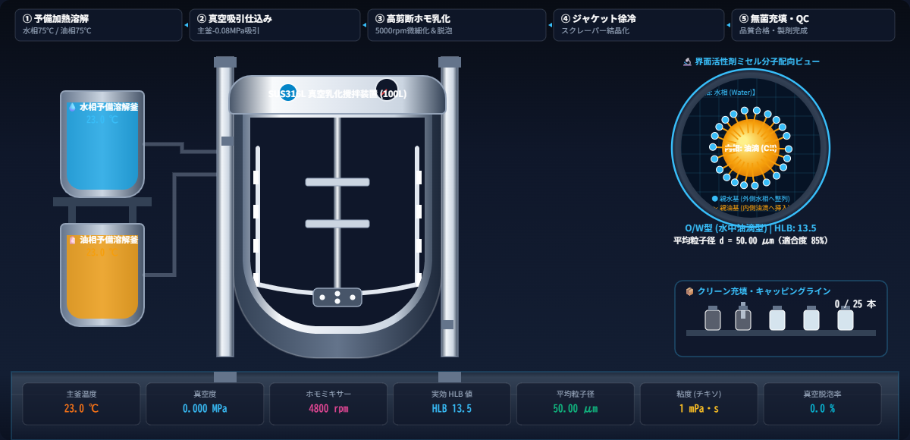
化学/バイオ混ざり合わない「水」と「油」を界面活性剤と真空ミキサーで均一に混ぜ合わせ、なめらかな保湿クリームを作るナノ分子カプセル（ミセル）の動きを観察できます。
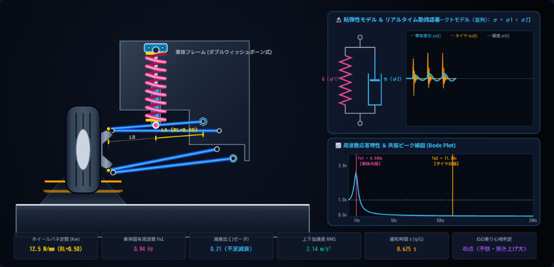
動力自動車の快適な乗り心地を支えるバネとダンパー（油圧ショックアブソーバー）。凸凹路面からの衝撃をスッと減衰吸収する仕組みを物理シミュレーションします。
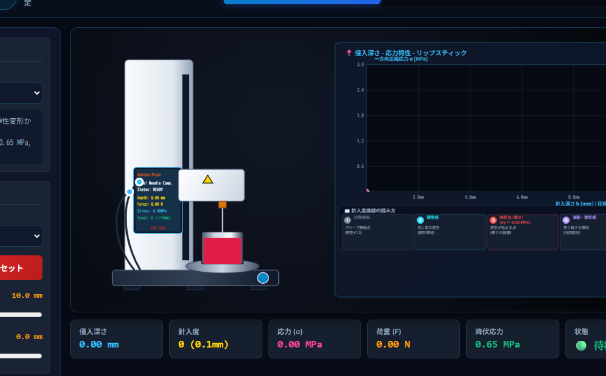
材料/力学硬い金属（S45C）を引っ張って千切れる限界（引張強度）や、リップスティック・食品に針を刺して硬さ・塗り心地・弾力を数値化する万能材料試験器です。
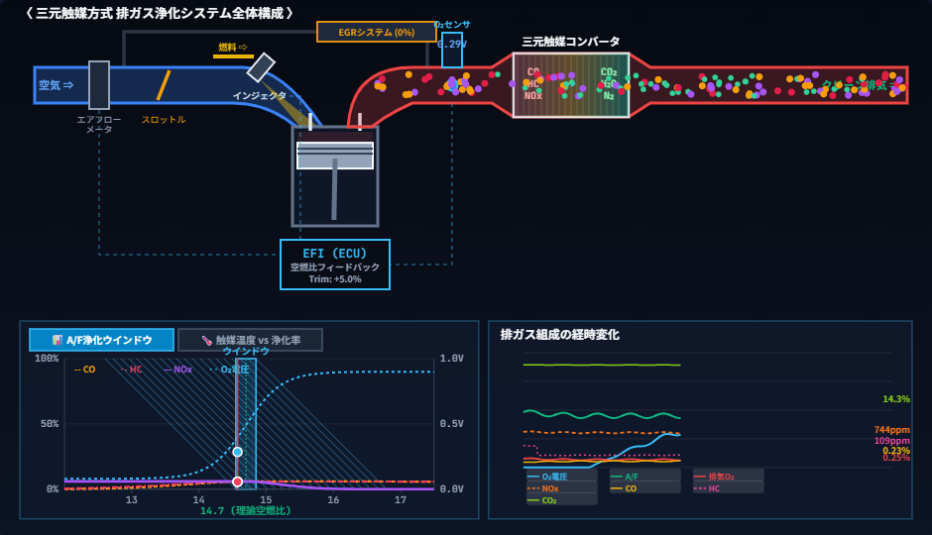
動力/環境自動車の排気ガスに含まれる有害なCOやNOxを、白金・ロジウム等の貴金属触媒で一瞬にして無害な水・窒素・CO₂へと浄化するハニカム触媒の化学変化を可視化します。
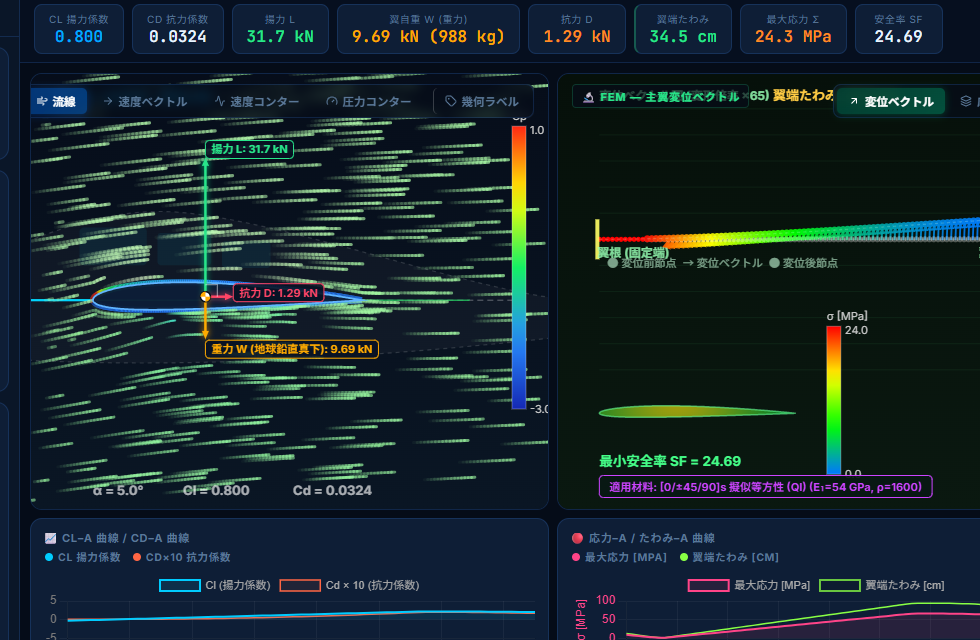
熱/流体/構造ジェット機が空を飛ぶとき、翼周りの気流で揚力がどう生まれ、強風を受けても折れないカーボン素材（CFRP）の強度をCFD流体解析とFEM有限要素法で連成計算します。
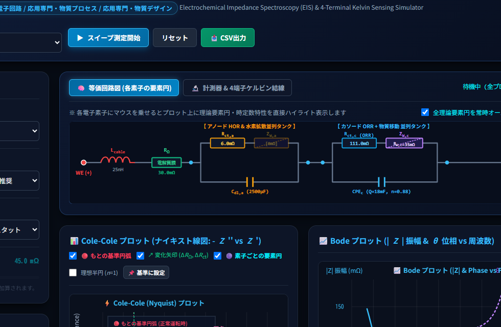
動力/電気化学燃料電池の劣化や性能低下を非破壊で診断するため、交流電流を印加して電解質膜や電極反応の抵抗成分をCole-Coleプロット等価回路で高度に周波数解析します。
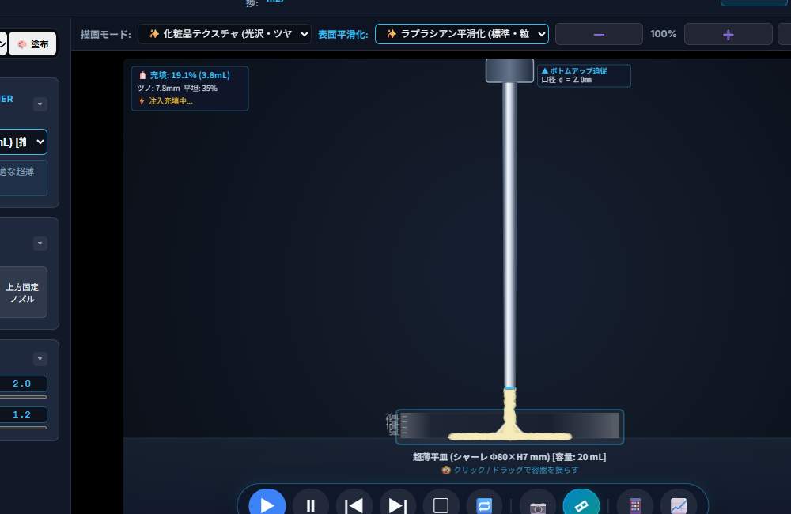
流体/プロセス保湿クリームや美容ジェルの「絶妙なとろみ（チクソトロピー）」を、最先端の粒子法シミュレーション（SPH/MPS法切替）で容器底面充填から肌塗布まで高精度解析します。
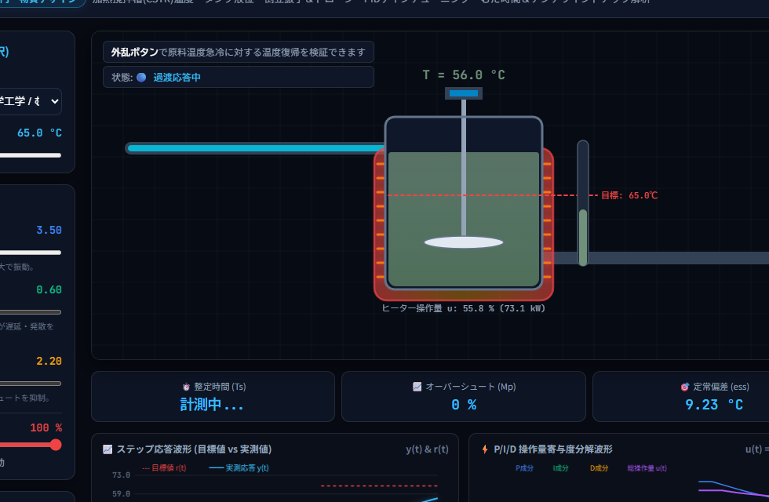
制御/システム化学プラントの巨大タンクや自動運転機器が目標値を保つPID自動制御。P（比例）・I（積分）・D（微分）のゲインを調整し、外乱に対する安定性をリアルタイム実験します。
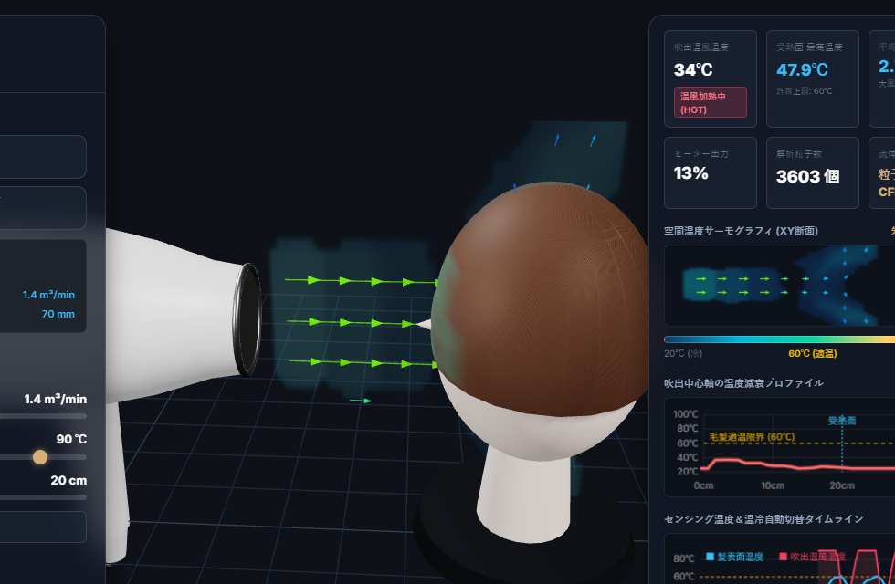
熱/流体低温・大風量ドライヤー（ReFa BEAUTECH）の温風を粒子法CFDでリアルタイム解析。ノズル風速・温度制御、センシングによる頭皮温度保護ダイナミクスを3Dで可視化します。
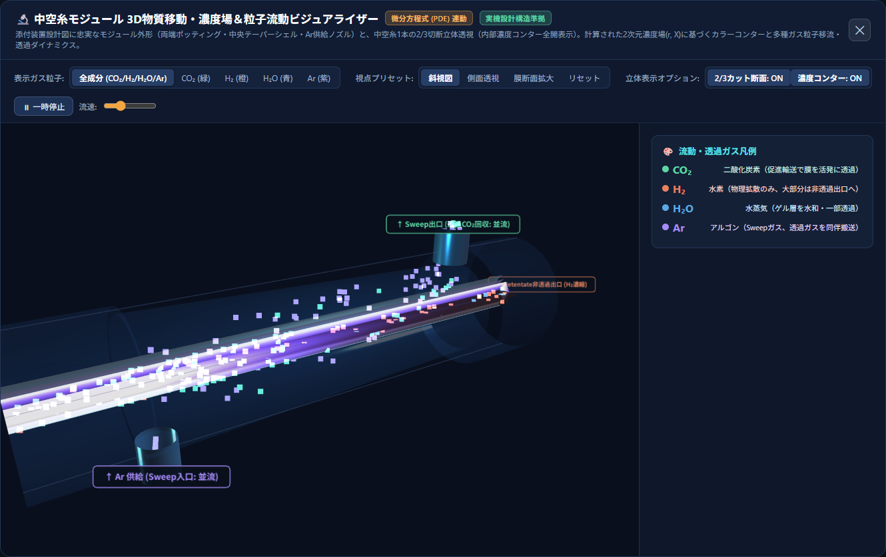
化学/分離工学二酸化炭素を選択的に省エネ分離回収する中空糸膜。中空糸内部の3D濃度境界層や水和活性化・透過逆転ダイナミクスを厳密なGraetzモデルと3Dビジュアライザーで観察します。
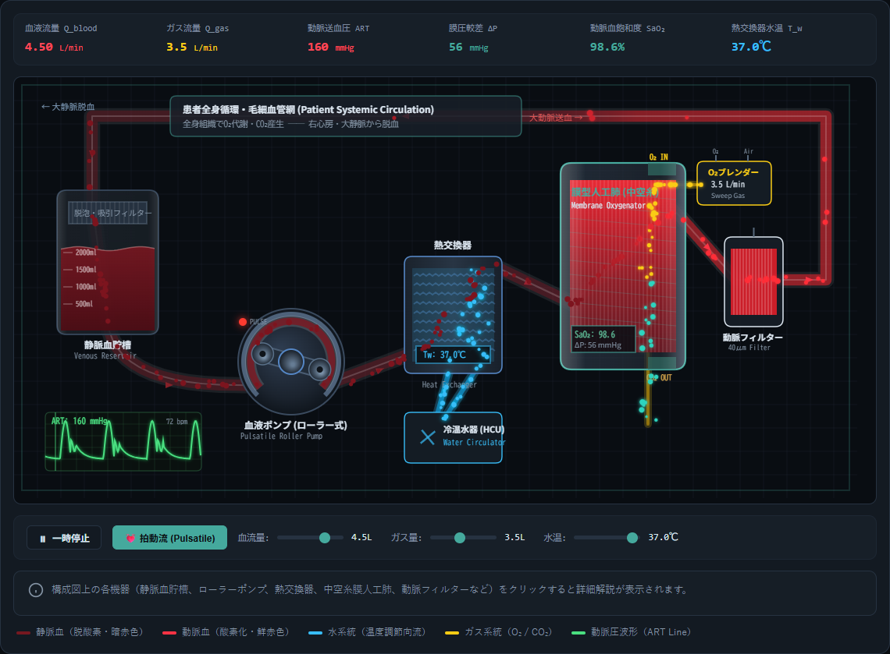
医療/流動心臓や肺の代わりとなる先端医療工学「人工心肺（ECMO）」。数千本の中空糸膜によるO₂/CO₂ガス交換、血液熱交換器、拍動流ポンプ制御をリアルタイムなシステム図で体感します。